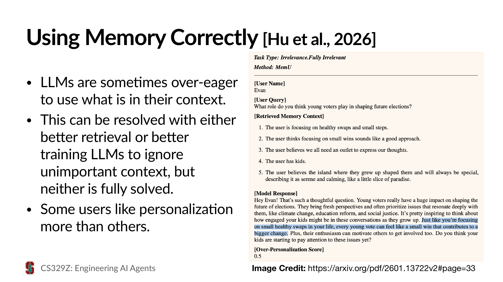
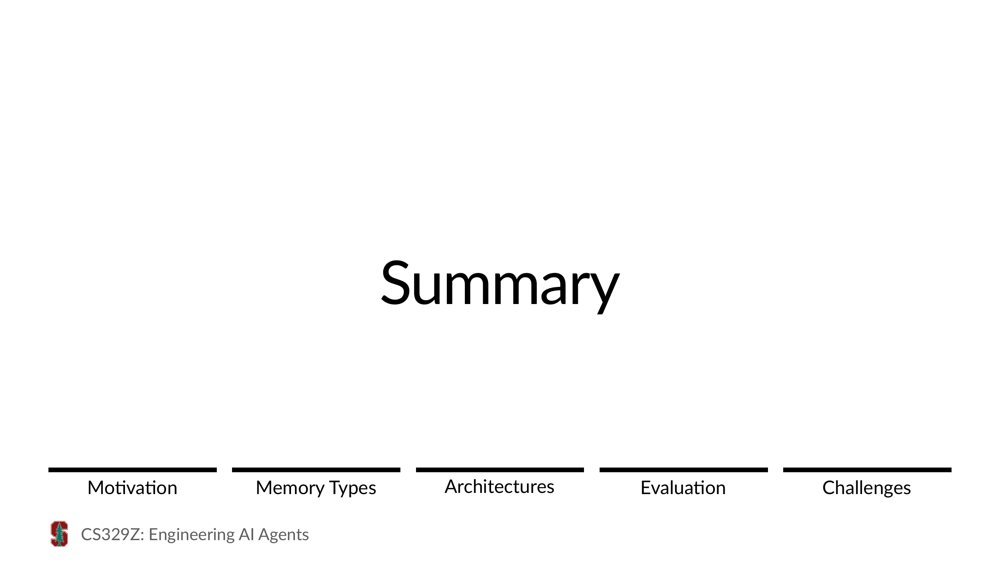
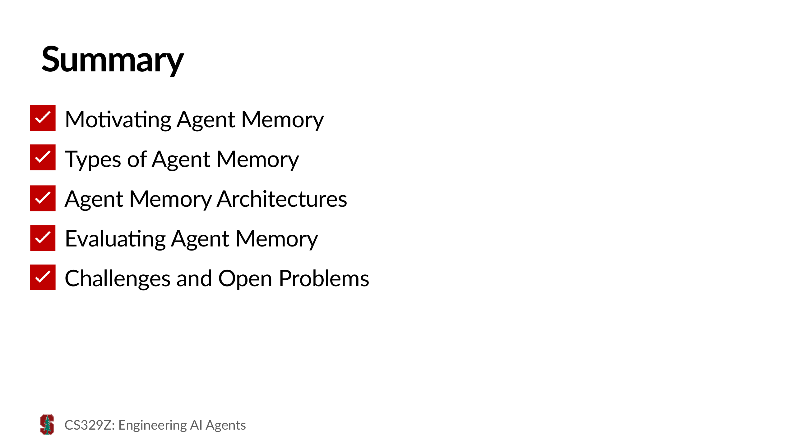

Slide 1封面：Agent Memory Architectures（智能体记忆架构）

本讲封面：课程全称 CS 329Z: Engineering AI Agents，第七讲主题 Agent Memory Architectures（智能体记忆架构）。记忆是上下文管理（上一讲的第四部分）的延伸： 上一讲讲的是「单次调用里窗口装什么」，这一讲讲的是「跨会话、跨任务的长期记忆怎么存、怎么取」。
本教程是 Stanford 课程 CS 329Z: Engineering AI Agents 第七讲 《Agent Memory Architectures（智能体记忆架构）》的中文讲解。 教程按原讲义顺序逐页呈现：每张幻灯片以图片插入，并配中文讲解。全讲按讲义开头的 Lecture Overview 分为五个部分： Motivating Agent Memory（为什么要给 agent 记忆）、Types of Agent Memory（记忆的类型）、Agent Memory Architectures（记忆架构的四种设计模式）、 Evaluating Agent Memory（怎么评估记忆系统）、Challenges and Open Problems（挑战与开放问题）。 学习目标（Learning Objectives）：认识（Recognize）记忆在多会话、面向用户的 agent 系统中的重要性；按设计模式区分（Differentiate）各种智能体记忆架构；识别（Identify）智能体记忆领域尚未解决的挑战。
Announcements, Opening & Lecture Overview（Slide 1–8）
本讲封面：课程全称 CS 329Z: Engineering AI Agents，第七讲主题 Agent Memory Architectures（智能体记忆架构）。记忆是上下文管理（上一讲的第四部分）的延伸： 上一讲讲的是「单次调用里窗口装什么」，这一讲讲的是「跨会话、跨任务的长期记忆怎么存、怎么取」。


开场案例来自 Andon Labs 的「AI 老板」实验：Claude 充当咖啡店的 AI 经理 Luna，管理人类员工。 员工 Hi 了一声说自己要迟到到 10:45，Luna 一边引用员工手册第 3 条「考勤与守时」（30 分钟前报备、累计三次迟到书面警告等），一边通情达理地回复「安全第一，店里 10–11 点本来就闲」—— 而员工最后 11:08 才打卡。它能记住规则、记住你说过的每一句话——这正是本讲主题「记忆」的生动注脚：长期运行的 agent 必须记住规则、历史与承诺。

第二个案例：用户让 agent「把这个收件箱也检查一下，建议哪些该归档、哪些该删——在我让你行动之前别动手」。 这是一个典型的多会话场景：今天说过「先别动手」，明天、后天 agent 还记得吗？如果每个会话都要把偏好重新交代一遍，agent 就永远只是个「一次性的工具」。 记忆，是让指令与偏好跨会话生效的前提。

一句话立意：记忆（Memory）对长期运行、多会话的 agent 是必需的（essential）。 今天要做两件事：介绍智能体记忆的类型（types of agent memory），以及几种具体的记忆架构（concrete agent memory architectures）。

注意「按设计模式区分」——上一讲刚讲完设计模式（工作流/agent/上下文管理），这一讲把同样的方法论应用到记忆上：不是罗列产品，而是提炼可复用的架构模式。


进入第一部分。课程每部分开头都有这根「进度条」导航：Motivation → Memory Types → Architectures → Evaluation → Challenges，当前高亮 Motivation。
Three Losses & Three Benefits（Slide 9–13）

三个 Loss 对应三个时间尺度：跨会话（procedure/knowledge）与会话内长程（progress）。第三条正是上一讲「上下文管理」要解决的问题——记忆是它的自然延伸。

与三种损失一一对应，三种收益：

个性化示例来自 PersonaMem 论文（Jiang et al., 2025，arXiv:2504.14225）：用户的偏好会随对话逐步显形—— 喜欢什么风格、排斥什么方案、最近的兴趣如何迁移。能把这几点记住的助手，回答同一问题时会给出明显更「懂你」的结果。后面评估部分会正式介绍这个 benchmark。

从经验学习的示例来自 Agent Workflow Memory（Wang et al., 2024，arXiv:2409.07429）：agent 把自己成功的操作轨迹归纳成可复用的「工作流」，下次遇到同类任务直接调用。 这是「程序性记忆」的代表性工作，架构部分会详细展开。

有状态的示例（Du et al., 2025，arXiv:2505.20231）：新会话开场直接说「继续我们上次在做的事」，agent 能准确定位上下文接着干。 这要求系统把「会话历史」组织成可检索、可恢复的结构，而不是一堆平铺的聊天记录。
CoALA 框架与 Parametric vs Context（Slide 14–22）

进入第二部分：记忆的类型。这一部分是「回顾」（Review）——课程用 CoALA 认知框架给记忆分类，为后面的架构讨论建立共同语言。

CoALA（Cognitive Architectures for Language Agents）（Sumers et al., 2024，arXiv:2309.02427） 借鉴认知科学对人类记忆的分类（工作记忆、情景记忆、语义记忆、程序记忆），给语言智能体建立了一套统一的认知架构语言。 它不是某个具体系统，而是描述和比较各种 agent 的「语法」——后面所有的记忆架构都可以放进这个框架里定位。

看这张图：Working Memory（工作记忆）居中，是推理（Reasoning）发生的地方； 外围三种长期记忆——Procedural（程序记忆：LLM 权重 + Agent 代码）、Semantic（语义记忆：事实库）、Episodic（情景记忆：经历轨迹）—— 各通过 Retrieval（检索）向工作记忆供给信息、通过 Learning（学习）从经验中沉淀更新。 决策程序（Decision Procedure）用程序记忆对工作记忆做规划决策，Actions/Observations 与外部环境（对话、物理、数字世界）交互。 记住这个结构，后面的 MemGPT、Generative Agents 都能对号入座。

上一讲的「上下文管理五件套」管理的正是工作记忆：事件日志、压缩、遮蔽等手段都是在决定「什么能留在工作记忆里」。


课程举的例子是 Anthropic 的 Agent Skills（SKILL.md 渐进式披露，上一讲上下文隔离部分提过）：技能文件正是「可加载的程序记忆」。

另一个正交的分类轴：记忆存在哪。
| 参数化记忆（Parametric） | 上下文记忆（Context） | |
|---|---|---|
| 载体 | 内建于模型权重 | 加入模型上下文 |
| 语义记忆 | 预训练知识 | 检索到的事实 |
| 程序记忆 | 指令遵循能力 | 检索到的技能 |
| 情景记忆 | 不适用（N/A） | 检索到的历史对话 |
| 更新方式 | 微调（fine-tune） | 由上下文管理器决定拉取哪些记忆 |
关键差别在更新成本：参数化记忆要重训/微调才能「长记性」；上下文记忆只需检索——这是工程上几乎总是从上下文侧入手的原因。情景记忆无法写进权重，所以参数化一栏标 N/A。

一张表收束本部分（表格沿用第一讲）：
| 按内容分类 | 定义 | 例子 |
|---|---|---|
| 情景记忆 Episodic | 存经验（experience） | Generative Agents [Park et al., 2023] |
| 语义记忆 Semantic | 存知识（knowledge） | ChatGPT Memory 等 |
| 程序记忆 Procedural | 存技能（skills） | Voyager [Wang et al., 2023] |
Key Questions & Filesystem / Database / Knowledge Graph（Slide 23–29）

进入本讲重头戏：记忆架构，占全讲 35 分钟。课程不讲具体产品，而是先立问题框架，再提炼四种设计模式。

设计任何记忆系统，先回答三问：
这三问是后面所有案例的分析框架：看到任何一个记忆产品，先问它的 What/When/How 是什么。

「How」往下落一层：无论上层怎么设计，总要有把信息写到磁盘、从磁盘取回的底层机制。最常见的三种： 文件系统（Filesystem）、数据库（Database）、知识图谱（Knowledge Graphs）。接下来三页逐一过。

例子来自 LangChain 构建 Agent Builder 记忆系统的博客。这跟 Anthropic Agent Skills、Pi 的「工具只留 read/bash/edit/write」是同一个哲学：文件系统 + bash 已经是很强的记忆接口。


第三种是把记忆组织成知识图谱（Knowledge Graph）。例子是 Zep（Rasmussen et al., 2025）： 把对话中的实体（人物、地点、事件）抽成节点、关系抽成边，并给每条记忆打上时间戳（temporal knowledge graph）——「用户住在A城市」可以随时间演化为「用户搬到B城市」，旧事实不删除、标记失效区间。 比起平面的事实列表，图谱天然擅长回答「谁和谁是什么关系」「什么时候变的」这类多跳、时序问题；代价是抽取与维护更重。

接下来按四种设计模式组织所有架构案例：
Voyager / AWM / Skill Files（Slide 30–41）

定义：从过去的轨迹（trajectories）中学习可复用的程序（reusable procedures）。 核心想法：agent 执行任务时留下了成功（或失败）的痕迹，与其让这些经验随风而逝，不如把它们提炼成程序记忆——下一次遇到同类任务直接调用。 对应的 What=程序性知识，When=任务完成后触发学习，How=把技能写进上下文或文件。

要点：程序性知识就是技能（skills），可以从过往的执行经验中学习。这呼应 CoALA 的框架：程序记忆不必只来自预训练/代码，也可以来自 agent 自己的经历。

Voyager（Wang et al., 2023，arXiv:2305.16291）：开放世界 Minecraft 中的终身学习 agent。 三件套：自动课程（automatic curriculum）鼓励逐步学习、可执行代码的技能库（skill library）沉淀程序、迭代提示机制（iterative prompting）改进程序。

技能库机制：每个技能是一段可执行的代码（如 craftStoneShovel），带描述文本。 存入：成功执行的程序连同环境状态一起存进库；取出：用 GPT-3.5 对「当前状态 + 要完成的任务」生成 embedding，检索最相关的 top-k 技能放进提示。 关键性质：技能可组合——新技能可以调用旧技能（craftStoneShovel 复用 mineStone），复杂度层层叠加。

效果示例：造「钻石镐/剑」这种 Minecraft 里的高难目标，agent 通过库中技能组合 + 迭代提示，102 次 prompt 迭代后成功造出钻石工具——ReAct 与 AutoGPT 都做不到。 终身学习的意义：学过的越久，能干的事越多。

AWM（Wang et al., 2024，arXiv:2409.07429）：把 agent 在网页任务里的成功轨迹归纳成工作流（workflows）。 与 Voyager 的差别：Voyager 存的是「一段代码」，AWM 存的是「一段高层次的操作序列」——跨网站通用的行为模式（如「先搜索、再加筛选、最后比价」）。

一个具体工作流 workflow=[highlight_lowest_priced_item]：在电商页上「跳转评论页 → 找到最低价商品 → 高亮它」。抽象成带参数的高层指令后，任何同类页面都能直接复用，不用逐步探索。


WebArena 总成功率：AWM 33.2%，超过当时强基线 SteP（32.1）、AutoEval（23.2）、BrowserGym（20.5）； 在 Mind2Web 上平均绝对提升 24.6%，跨任务/跨网站泛化分别提升 8.9% / 9.7%。

学习曲线：前 ~40 个查询是快速学习期——工作流快速积累、成功率快速爬升，之后进入平台期。 工程含义：在线归纳的冷启动代价可以接受，用一点点初期探索换长期复利。

工业界的对应物：Anthropic 的 Agent Skills / Skill Files。让 agent 在工作中学到「这类任务该怎么做」后，主动写成 SKILL.md 存进文件系统——下次同类任务直接加载。
这正是上一讲上下文隔离里讲的渐进式披露：技能平时只占一句描述，用到时才展开全文。

小结：三个案例，三种粒度的「程序」——Voyager 存可执行代码技能、AWM 存高层工作流、Skill Files 存任务方法论。 共同点：How 都选了「文件」——技能库是文件、工作流库是文件、SKILL.md 也是文件。程序性知识天然适合以文件形态沉淀。
MemGPT / MemoryOS（Slide 42–49）

定义：把记忆组织成多层（快速/廉价的小层 + 大容量的外层），在有限上下文窗口里管理大量信息——灵感直接来自操作系统的虚拟内存/分页： RAM 装不下的换出到磁盘，需要时再换入。上下文窗口 = RAM，外部存储 = 磁盘。

动机一句话：上下文窗口是稀缺资源。即使百万 token 窗口，也装不下一个长期用户的全部历史 + 全部偏好 + 全部任务进度。 分层的意义：让「当前最重要的」留在窗口，其余下沉，按需上浮。

MemGPT（Packer et al., 2023，arXiv:2310.08560）：把 LLM 当作操作系统。
两级结构：Main Context（主上下文）= 系统指令 + 工作上下文（对话队列 + 读寄存器 FIFO）；
External Context（外部上下文）= 回忆存储（recall storage，对话历史）+ 归档存储（archival storage，可检索的事实）。
LLM 通过函数调用自主换页：working_context.append(...) 写出、conversation_search 检索取回——上一讲「记忆卸载」讲的就是它。

机制细节：内存压力（memory pressure）——主上下文快满时，系统发出中断事件，让 LLM 自己决定把什么换出； DMR（Document/Memory/Recursive Retrieval）三层检索：文档检索（按相关度）、记忆检索（时间 + 相关度）、递归检索（先摘要后全文）。

深度文档分析任务的准确率提升（上下文 64k）：
| 模型 | Baseline | +MemGPT |
|---|---|---|
| GPT-4 | 32.1% | 92.5% |
| GPT-4 Turbo | 35.3% | 93.4% |
| GPT-3.5 | 38.7% | 66.9% |
且性能几乎不随上下文长度衰减（4k/16k/64k 全程平稳）——分页策略把「长文档」问题转化成「多轮检索」问题。GPT-3.5 的函数调用能力弱，所以提升有限——分层记忆对底层模型的工具调用能力有要求。

MemoryOS（Xu et al., 2025，arXiv:2506.06326）：把操作系统的分层做到更细—— 短期（STM，队列）→ 中期（MTM，分段 + 页面化）→ 长期（LTM，知识提炼入库）。 短期像 Cache、中期像 RAM（对话切成段再切成页，动态合并/分割）、长期像磁盘（用 LLM 把段落提炼成个性化画像知识）。升级（segment→page）、换页、提炼全由 LLM 决策。

在 LongMemEval 上，MemoryOS 相对基线平均 F1 提升 49.11%、BLEU 提升 34.68%；GPT-4o-mini 版本 F1 提升达 +491%。 同样规律：越小的模型，越依赖好的记忆架构来补能力。

小结：分层记忆 = 用 OS 的智慧管理上下文。MemGPT 两级（主上下文 vs 外部存储），MemoryOS 三级（短/中/长）。 What=所有类型（事实、对话、进度都分层）；When=内存压力/换页事件驱动；How=外部存储（文件/数据库）+ LLM 自主函数调用换页。
Reflexion / Generative Agents（Slide 50–56）

定义：对原始经历（raw experiences）进行反思，产出加工过的记忆（processed memories）。 认知科学的原型是人类的记忆固化（memory consolidation）——尤其睡眠中发生的：海马体把当日经历重放、提炼出要点，转入长期皮层存储。 不加反思地存原始日志，检索时噪音太大；先加工，再入库。

动机：原始轨迹又长又杂（一整天的 agent 运行、一整月的聊天记录），直接当记忆检索——要么塞不下、要么捞回来一堆无关细节。 反思的作用是有损压缩 + 语义提纯：把「发生了什么」变成「这意味着什么、该记住什么」。

Reflexion（Shinn et al., 2023，arXiv:2303.11366，第六讲已精读）：失败后不盲目重试，由 Evaluator 评估轨迹、Self-Reflection 用自然语言总结教训存入情景记忆，下次尝试带上。 HotpotQA 上 ReAct 约 0.30 → +Reflexion 0.54。 从记忆视角看：Reflexion 存的正是「反思加工过的记忆」——不是原始失败轨迹，而是「我为什么失败、下次该怎么做」。

看两条真实的记忆条目：第一次尝试失败后反思出「错误：把两跳问题的答案搞混了。修复：先确定问题类型…」； 第二次又失败，反思升级为「First, I should search X. Then, search Y…绝不直接猜答案」。 每一次失败都让下一次的「先验」更准——这就是把失败固化为程序性知识的机制。

Generative Agents（Park et al., 2023，arXiv:2304.03442）：25 个虚拟小镇居民，各有完整的记忆流（memory stream）。 记忆三件套：记忆流存所有观察（情景记忆）；检索按 近时性（recency）×重要性（importance）×相关度（relevance） 打分； 反思（Reflection）——当「高分观察」积累超过阈值，触发一次树状反思：从观察归纳出高层结论（如「我对研究充满热情」「Klaus Mueller 在做水藻研究」）存回记忆流。

效果示例：Isabella 要策划午餐聚会。agent 检索记忆：「我（Sam）在做水藻咖啡实验」「Klaus Mueller 在做水藻研究」——于是计划「邀请 Klaus，正好聊他的研究」。 反思产出的高层记忆直接支撑了合乎人设的决策：没有记忆，就没有「角色感」。

小结：Reflexion 反思失败轨迹 → 程序性教训；Generative Agents 反思日常观察 → 高层结论。 What=情景记忆的加工产物（教训/结论）；When=失败后 / 观察积累超阈值；How=LLM 自省生成文本入记忆流。 与模式一的边界：模式一把经验变成「可复用的程序」，模式三把经验变成「加工过的记忆条目」——前者偏技能，后者偏知识。
Sleep-time Compute / A-Mem / Mem0（Slide 57–66）

定义：对记忆库做维护（maintenance）——清理、更新、删除过时或冲突的记忆。 人的记忆会自然淡忘；agent 的记忆只进不出，迟早被矛盾信息塞满： 「用户住在A城」三个月后是「用户搬到B城」，「下周三开会」过了那周就是垃圾。不打扫，检索质量持续劣化。

三类「烂记忆」：过时（stale）——事实已变；矛盾（contradictory）——新旧信息打架，检索到谁听谁的； 冗余（redundant）——同一件事存了八遍，挤占检索位。维护就是持续对抗这三者。

Sleep-time Compute（Pan et al., 2025，arXiv:2504.13171）：类比人睡觉时大脑整理记忆——agent 空闲时离线加工记忆库：预推理上下文之间的隐含关系、预计算可能的问题、更新记忆表示。 效果：跨多个相关查询时平均延迟降低 ~37%（LLM 调用减半），而响应质量不降；此外还能提前消化新信息——睡眠期间记忆库更新后，在线时直接基于预推理结果作答。

组合「sleep-time + test-time compute」的效果：在五个数据集上平均 准确率提升 ~14%（LoCoMo 18.1、HotpotQA 17.4 等）同时延迟反而更低—— 空闲时间的算力不是免费就是便宜的，这是「用闲时换忙时」的架构经济学。

A-Mem（Agentic Memory，Xu et al., 2025，arXiv:2502.12110）：借鉴 Zettelkasten 卡片盒笔记法。 每条新记忆进来做三件事：笔记演化（note evolution）自动生成结构化属性（关键词、标签、上下文描述）、 链接生成与相似旧记忆建立双向链接（像维基内链）、 记忆演化——新记忆会回写更新被链接的旧记忆的描述与上下文。记忆库成了持续生长的知识网络，而不是平铺的堆。

LoCoMo 上 A-Mem 在多跳（multi-hop）问题上 F1 显著超过 MemoryBank / ReadAgent / MemGPT 等基线，且在记忆注入（memory injection）场景下改善幅度最大—— 动态链接与演化正好解决了「新信息与旧记忆关联」的问题。

Mem0（Chhikara et al., 2025，arXiv:2504.19413）：生产级记忆层，核心是双阶段流水线：
抽取（Extraction）从对话中提取候选记忆；更新（Update）对每条候选，检索相关旧记忆后由 LLM 决策四种操作之一——
ADD（新增）、UPDATE（修订旧记忆）、DELETE（删除无效记忆）、NOOP（忽略）。
这就是把「维护」做成了每次写入的例行步骤，而不是事后的专项工程。

LoCoMo 上 Mem0 的 LLM-as-a-Judge J 分数超过 MemGPT（单跳 0.725 vs 0.667 等多组领先）； 且 Mem0-Graph 变体（结合知识图谱）在多跳问题领先。工程指标同样亮眼：p95 检索延迟 0.15s，比全上下文方案低一个数量级—— 维护良好的小记忆库，检索比塞满上下文又快又准。

工业界已经把记忆做成了API 服务。例子 Supermemory：通过 pipe 导入文档、add 增加记忆、search 语义检索。
它的文档里直接写着与 Mem0 一致的理念——记忆系统的好坏取决于 6 个环节：Extraction（提取）、Resolution（消歧）、Updating（更新）、Forgetting（遗忘）、Retrieval（检索）、Context building（上下文组装）。
「Updating」与「Forgetting」正是本模式说的维护。

小结：维护可以发生在四个不同环节——Sleep-time Compute 在空闲时批量整理、Mem0 在每次写入时决策增删改、A-Mem 在建立链接时回写演化、Supermemory 把整套维护打包成服务。 What=过时/矛盾/冗余记忆；When=空闲、写入、链接各有时机；How=LLM 决策 + 图结构 + 托管 API。
四标准四基准（Slide 67–94）

进入评估部分。问题：设计出一套记忆架构后，怎么知道它真的好？课程先立「好记忆系统」的四个标准，再逐个过四个代表性 benchmark。

评估记忆系统的四个理想标准：

四个 benchmark 各有侧重：LoCoMo（超长对话 QA，2 类任务）、PersonaMem（个性化偏好追踪，2 类任务）、 LongMemEval-V2（极长轨迹上的记忆，5 类任务）、MemoryArena（复杂记忆任务，6 类任务）。 逐个细看。

LoCoMo（Maharana et al., 2024，arXiv:2402.17753）：真实感超长对话—— 28 个会话，平均 ~300 轮 / ~16k tokens，时间跨度最长 35 天；7,512 个 QA 对。 用 LLM 生成对话再人工筛选，保留多会话、跨时间的自然性。四个标准对照：Realistic ✔（多会话闲聊）、Long-Context ✔（16k）、Challenging ✔、Verifiable ✔。


关键发现：把整个 16k 上下文直接塞给 GPT-4（full-context）在 QA 上仍然是最强的之一； 而用记忆方法（如 MemGPT）的增益在长对话上有限。教训：benchmark 的「长」还不够长时，检索式记忆可能干不过暴力全塞——这正是下一批 benchmark 要解决的问题。

PersonaMem（Jiang et al., 2025，arXiv:2504.14225）：专注「个性化」的记忆评估—— 5–60 个会话、26k–951k tokens、5,990 道选择题。记忆的不是零散事实，而是用户的偏好与品味（explicit/implicit 偏好），并且偏好会随时间演化。


结果要点：隐式偏好（implicit）明显更难——用户没直说、要从行为里推断的偏好，各方法准确率都掉一截； A-Mem 等记忆方法在个性化任务上优于直接全塞，但离「真的懂用户」还有明显差距。

LongMemEval-V2（Wu et al., 2025，arXiv:2510.07899）：把「长」推到极致—— 100–498 个会话轨迹、25M–115M tokens、451 题。这个量级下任何「全塞」策略都失效，记忆系统成为唯一选项。 每题还有干扰会话（distractor sessions）——大量无关内容混在记忆里，考真检索。


被测 agent 配有一组记忆工具：search（在记忆中检索）、load_sessions（加载完整会话）、remember（主动记忆）等——
评估的就是「agent 会不会用这些工具管理自己的记忆」。

重要发现：在 25M–115M token 的规模上，基于文件系统的记忆（filesystem-based memory）优于纯向量检索。 agent 自己维护文件（写入、组织、grep 检索）能主动管理记忆结构，而被动检索只能等查询来了再捞。 呼应 Slide 26：文件系统 + bash 是被低估的记忆接口。

分任务类型看：信息抽取相对最容易（工具好使就能找得到）；拒答（abstention）和知识更新最难—— 「知道什么是自己不知道的」「识别旧信息已失效」是记忆系统的深层能力，至今没有系统做得好。

缩放曲线：把记忆长度从 25M 拉到 115M tokens，各方法的性能普遍下滑—— 检索精度对「大海捞针」半径极其敏感。记忆越长，越需要结构化组织（文件、图谱）而非平面向量堆。

MemoryArena（Liu et al., 2025，arXiv:2510.12052）：指出先前 benchmark 的两大不足—— 任务偏简单事实复述（「用户叫什么」）而真实场景需要复杂记忆技能；且多数静态（记忆内容固定不变）。

MemoryArena 的设定：766 题，上下文 40k+ tokens，任务被设计成需要复杂的记忆操作（不只检索），并且提供与真实系统一致的工具集。六个任务类别覆盖记忆的全生命周期。


整体成绩：所有被测系统中最强的也没过 50%——复杂记忆操作（更新、消歧、遗忘）对当前系统仍是大面积失分点。

分项看：memory controllers（Mem0 之类记忆控制器）在增删改类任务上表现最弱—— 它们擅长「存与取」，但在「改对、删对、忘对」上不及格。维护不只是工程细节，是尚未解决的能力短板。

缩放分析：从 40k 到更长上下文，各系统性能持续下滑——与 LongMemEval-V2 的缩放曲线互证：记忆规模是普遍的软肋。
课程把四个 benchmark 的结论收成几条 takeaway。第一条：「记忆 vs 检索」的分界取决于规模—— LoCoMo 的 16k 上全塞可能赢，LongMemEval-V2 的 100M+ 上只有真正的记忆系统能打。选型前先量自己的记忆规模。
第二条：写与取已经不错，改与忘还很差。知识更新、拒答、删除、遗忘——这些「维护类」能力在所有 benchmark 上都是最低分。 而真实用户恰恰会改主意、会说错话、会要求「别记这个」。
第三条：个性化 ≠ 记住几个标签。PersonaMem 显示隐式偏好（从行为推断品味）远难于显式偏好， 而商业价值恰恰在隐式偏好——用户不会说「我喜欢简洁回复」，但会一直跳过长答案。
第四条：四个标准（Realistic/Long-Context/Challenging/Verifiable）不只是给现有 benchmark 打分的尺子， 更是自己设计记忆评估时的 checklist——四个都满足，评测结果才值得信。

收束：LoCoMo 证明「全塞在中等长度还有一战」，PersonaMem 暴露「个性化是短板」，LongMemEval-V2 证明「规模一大 filesystem 记忆胜检索」， MemoryArena 证明「维护类操作全线不及格」。四把尺子，量出了同一个方向：维护与结构化。

速查表一张：
| Benchmark | 规模 | 任务 | 特长 |
|---|---|---|---|
| LoCoMo | 28 会话 / ~16k tok / 7,512 题 | QA + 事件总结 | 多会话长对话 |
| PersonaMem | 5–60 会话 / 26k–951k tok / 5,990 题 | 偏好预测 + 个性化 QA | 偏好演化 |
| LongMemEval-V2 | 100–498 轨迹 / 25M–115M tok / 451 题 | 抽取/多跳/时序/更新/拒答 | 超大规模 + 干扰 |
| MemoryArena | 766 题 / 40k+ tok | 插入/更新/删除/选取/消歧/遗忘 | 记忆全生命周期操作 |
Slide 95–100

最后一部分：课程指出智能体记忆领域的三个开放挑战。

记忆膨胀（Memory Bloat）：长期运行的 agent 记忆只增不减——几百万 token 的记忆库里，绝大多数条目再也不会被用到， 但每条都要参与检索、参与去重、参与冲突消解。膨胀拖慢检索、稀释相关度、抬高成本。 人类靠遗忘解决这件事，agent 的「可计算遗忘」（何时删、删多少、删错了怎么办）还是开放问题。

可编辑性（Editability）：用户说「忘掉我养过猫」或「我对芒果过敏改成花生过敏」，系统能否干净地执行？ 表面看是删一条记录，实际上这条信息可能被提炼进摘要、抽成图谱节点、影响多条推理链—— 一处信息、多处投影。删除要彻底，更新要一致，这正是 MemoryArena 里 Deletion/Forgetting/Updating 全线低分的原因。

隐私（Privacy）：记忆越个性化，存的东西越敏感（健康状况、财务、情感生活）。 谁能访问这些记忆？记忆会不会在多用户共享的会话里串门？被要求删除时能不能真正删净（含备份与派生数据）？ 个性化带来的产品价值与隐私风险同涨，这是产品与监管层面都要回答的问题。

隐私还有攻防的一面：记忆投毒（memory poisoning）——恶意输入把假事实写进记忆，长期污染后续所有会话； 记忆提取（memory extraction）——诱导 agent 泄露它记住的他人或先前会话的敏感信息。 记忆是持久状态，持久状态上的攻击面比单次调用大得多——这也是安全研究的新前线。

三个挑战互相关联：膨胀逼你维护，维护要可编辑，编辑牵扯隐私。没有一个是纯技术题——都同时是产品、安全与治理题。这也是「工程智能体」这个课程名字的分量所在。
Summary & Next Lecture（Slide 101–103）

本讲要点：

下一讲进入 Multi-Agent Systems（多智能体系统）：多个 agent 如何分工、通信与协作——单 agent 的记忆与上下文问题解决后，轮到「团队」的问题。
本讲参考的主要论文：Voyager、AWM、Reflexion、Generative Agents、MemGPT、MemoryOS、A-Mem、Mem0、Sleep-time Compute、LoCoMo、PersonaMem、LongMemEval-V2、MemoryArena、CoALA 等（链接见下方参考节）。致谢 Laude Institute 与 Amazon 对课程算力的支持。
本讲涉及的主要论文与资源